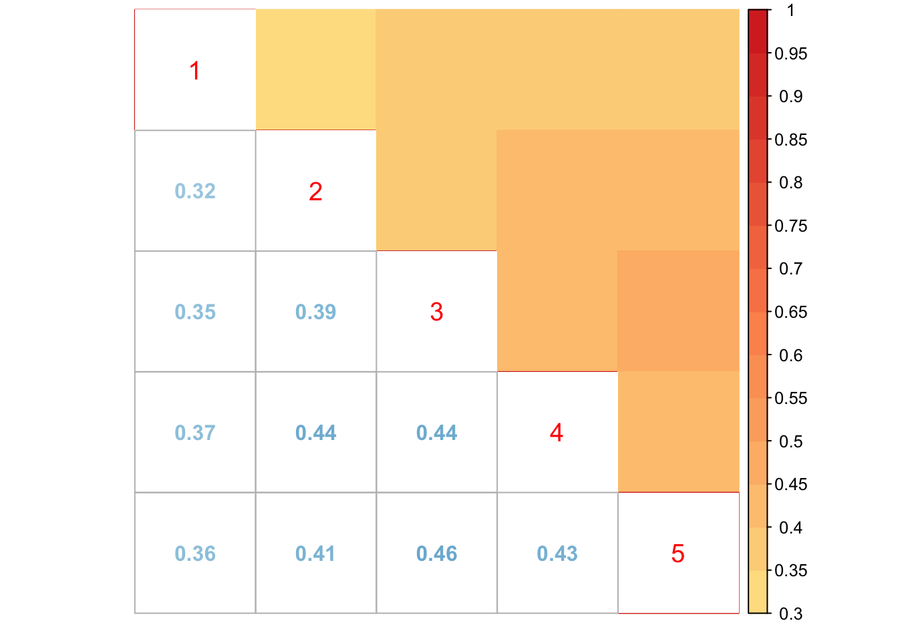

Compare beta and Z
Yuxin Zou
2017-11-15
Last updated: 2017-11-15
Code version: c132e57
Simulate Shat equal data R = 5
library(mashr)Loading required package: ashrset.seed(1)
simdata.equal = simple_sims(500,5,0.5)
# set mash data
TestdataBeta.equal = set_mash_data(simdata.equal$Bhat, simdata.equal$Shat, alpha=0)
TestdataZ.equal = set_mash_data(simdata.equal$Bhat, simdata.equal$Shat, alpha=1)Create covariance matrices
# center
TestdataZ.equal.center = set_mash_data(apply(as.matrix(TestdataZ.equal$Bhat), 2, function(x) x - mean(x)))
# canonical cov
U.c.equal = cov_canonical(TestdataBeta.equal)
# data_driven
m.1by1.Z.equal = mash_1by1(TestdataBeta.equal, alpha=1)
strong.Z.equal = get_significant_results(m.1by1.Z.equal,0.05)
U.pca.Z.equal = cov_pca(TestdataZ.equal.center,5,strong.Z.equal)EE model
U.ed.beta.equal = cov_ed(TestdataBeta.equal, U.pca.Z.equal, strong.Z.equal)
U.m.beta.equal = mash(TestdataBeta.equal, c(U.c.equal,U.ed.beta.equal)) - Computing 2000 x 257 likelihood matrix.
- Likelihood calculations took 0.15 seconds.
- Fitting model with 257 mixture components.
- Model fitting took 0.60 seconds.
- Computing posterior matrices.
- Computation allocated took 0.01 seconds.barplot(get_estimated_pi(U.m.beta.equal), las = 2, cex.names = 0.7, main='EE')
EZ model
U.ed.Z.equal = cov_ed(TestdataZ.equal, U.pca.Z.equal, strong.Z.equal)
U.m.Z.equal = mash(TestdataZ.equal, c(U.c.equal, U.ed.Z.equal)) - Computing 2000 x 257 likelihood matrix.
- Likelihood calculations took 0.06 seconds.
- Fitting model with 257 mixture components.
- Model fitting took 0.50 seconds.
- Computing posterior matrices.
- Computation allocated took 0.01 seconds.FIXME: 'compute_posterior_matrices' in Rcpp does not transfer EZ to EEbarplot(get_estimated_pi(U.m.Z.equal), las = 2, cex.names = 0.7, main='EZ')
The estimated weights are similar.
Simulate Shat different among conditions, same among samples
set.seed(1)
simdata.col.diff = simple_sims(500, 5, rep(c(0.1,0.08,0.15,0.12,0.06), each=2000))
vhat = 0
simdata.col.diff$z = simdata.col.diff$Bhat/simdata.col.diff$Shat
if (vhat == 1) {
V = cor(simdata.col.diff$z[which(apply(abs(simdata.col.diff$z),1, max) < 2),])
} else {
V = diag(ncol(simdata.col.diff$z))
}
TestdataBeta.col.diff = set_mash_data(Bhat=simdata.col.diff$Bhat,
Shat=simdata.col.diff$Shat,
V=as.matrix(V),
alpha = 0)
TestdataZ.col.diff = set_mash_data(Bhat=simdata.col.diff$Bhat,
Shat=simdata.col.diff$Shat,
V=as.matrix(V),
alpha = 1)Create covariance matrices
# center
TestdataZ.col.diff.center = set_mash_data(Bhat = apply(as.matrix(TestdataZ.col.diff$Bhat), 2, function(x) x - mean(x)),
V = as.matrix(V))
# canonical cov
U.c.col.diff = cov_canonical(TestdataBeta.col.diff)
# data_driven
m.1by1.Z.col.diff = mash_1by1(TestdataBeta.col.diff, alpha=1)
strong.Z.col.diff = get_significant_results(m.1by1.Z.col.diff,0.05)
U.pca.Z.col.diff = cov_pca(TestdataZ.col.diff.center,5,strong.Z.col.diff)EE model
U.ed.beta.col.diff = cov_ed(TestdataBeta.col.diff, U.pca.Z.col.diff, strong.Z.col.diff)
U.m.beta.col.diff = mash(TestdataBeta.col.diff, c(U.c.col.diff, U.ed.beta.col.diff)) - Computing 2000 x 353 likelihood matrix.
- Likelihood calculations took 0.07 seconds.
- Fitting model with 353 mixture components.
- Model fitting took 0.49 seconds.
- Computing posterior matrices.
- Computation allocated took 0.02 seconds.barplot(get_estimated_pi(U.m.beta.col.diff), las = 2, cex.names = 0.7, main='EE')EZ model
U.ed.Z.col.diff = cov_ed(TestdataZ.col.diff, U.pca.Z.col.diff, strong.Z.col.diff)
U.m.Z.col.diff = mash(TestdataZ.col.diff, c(U.c.col.diff,U.ed.Z.col.diff)) - Computing 2000 x 353 likelihood matrix.
- Likelihood calculations took 0.08 seconds.
- Fitting model with 353 mixture components.
- Model fitting took 0.44 seconds.
- Computing posterior matrices.
- Computation allocated took 0.01 seconds.FIXME: 'compute_posterior_matrices' in Rcpp does not transfer EZ to EEbarplot(get_estimated_pi(U.m.Z.col.diff), las = 2, cex.names = 0.7, main='EZ')
The estimated weights are different.
library('corrplot')corrplot 0.84 loadedx <- cov2cor(U.m.Z.col.diff$fitted_g$Ulist[["ED_tPCA"]])
x[x > 1] <- 1
x[x < -1] <- -1
corrplot.mixed(x, tl.pos="d",upper='color',cl.lim=c(0.3,1), upper.col=colorRampPalette(rev(c("#D73027","#FC8D59","#FEE090","#FFFFBF",
"#E0F3F8","#91BFDB","#4575B4")))(40),
tl.cex=1.2)
svd.out = svd(U.m.Z.col.diff$fitted_g$Ulist[["ED_tPCA"]])
v = svd.out$v
options(repr.plot.width=10, repr.plot.height=5)
for (j in 1:1)
barplot(v[,j]/v[,j][which.max(abs(v[,j]))], cex.names = 0.7,
las = 2, main = paste0("EigenVector ", j, " for PCA-based covariance matrix"))
Check significant samples under transformation A
A = rbind(c(1,-1,0,0,0))
subset.data = get_significant_results(U.m.beta.col.diff)
simdata.col.diff.subset = simdata.col.diff
simdata.col.diff.subset$Bhat = simdata.col.diff$Bhat[subset.data,]
simdata.col.diff.subset$Shat = simdata.col.diff$Shat[subset.data,]
TestdataBeta.col.diff.subset = set_mash_data(simdata.col.diff.subset$Bhat, simdata.col.diff.subset$Shat, alpha = 0)
TestdataZ.col.diff.subset = set_mash_data(simdata.col.diff.subset$Bhat, simdata.col.diff.subset$Shat, alpha = 1)
# EE
U.m.beta.col.diff.posterior = mash_compute_posterior_matrices(U.m.beta.col.diff, TestdataBeta.col.diff.subset, A=A, algorithm.version = 'R')
U.m.beta.col.diff$result = U.m.beta.col.diff.posterior
# EZ
U.m.Z.col.diff.posterior = mash_compute_posterior_matrices(U.m.Z.col.diff, TestdataZ.col.diff.subset, A=A, algorithm.version = 'R')
U.m.Z.col.diff$result = U.m.Z.col.diff.posterior
length(get_significant_results(U.m.beta.col.diff))[1] 823length(get_significant_results(U.m.Z.col.diff))[1] 1098Comparing loglikelihood
get_loglik(U.m.beta.col.diff)[1] -1860.587get_loglik(U.m.Z.col.diff)[1] -3349.742EE model has higher likelihood, since the data is simulated under EE.
Simulate Shat different among samples, same among conditions
set.seed(1)
simdata.samp.diff = simple_sims(500, 5, rep(c(0.5,0.4,5,1,1), 400))
vhat = 0
simdata.samp.diff$z = simdata.samp.diff$Bhat/simdata.samp.diff$Shat
if (vhat == 1) {
V = cor(simdata.samp.diff$z[which(apply(abs(simdata.samp.diff$z),1, max) < 2),])
} else {
V = diag(ncol(simdata.samp.diff$z))
}
TestdataBeta.samp.diff = set_mash_data(Bhat=simdata.samp.diff$Bhat,
Shat=simdata.samp.diff$Shat,
V=as.matrix(V),
alpha = 0)
TestdataZ.samp.diff = set_mash_data(Bhat=simdata.samp.diff$Bhat,
Shat=simdata.samp.diff$Shat,
V=as.matrix(V),
alpha = 1)Create covariance matrices
# center
TestdataZ.samp.diff.center = set_mash_data(Bhat = apply(as.matrix(TestdataZ.samp.diff$Bhat), 2, function(x) x - mean(x)))
# canonical cov
U.c.samp.diff = cov_canonical(TestdataBeta.samp.diff)
# data_driven from Z
m.1by1.Z.samp.diff = mash_1by1(TestdataBeta.samp.diff, alpha=1)
strong.Z.samp.diff = get_significant_results(m.1by1.Z.samp.diff,0.05)
U.pca.Z.samp.diff = cov_pca(TestdataZ.samp.diff.center,5,strong.Z.samp.diff)EE model
U.ed.beta.samp.diff = cov_ed(TestdataBeta.samp.diff, U.pca.Z.samp.diff, strong.Z.samp.diff)
U.m.beta.samp.diff = mash(TestdataBeta.samp.diff,
c(U.c.samp.diff, U.ed.beta.samp.diff)) - Computing 2000 x 337 likelihood matrix.
- Likelihood calculations took 0.63 seconds.
- Fitting model with 337 mixture components.
- Model fitting took 0.82 seconds.
- Computing posterior matrices.
- Computation allocated took 0.10 seconds.barplot(get_estimated_pi(U.m.beta.samp.diff), las = 2, cex.names = 0.7, main='EE')EZ model
U.ed.Z.samp.diff = cov_ed(TestdataZ.samp.diff, U.pca.Z.samp.diff, strong.Z.samp.diff)
U.m.Z.samp.diff = mash(TestdataZ.samp.diff, c(U.c.samp.diff, U.ed.Z.samp.diff)) - Computing 2000 x 257 likelihood matrix.
- Likelihood calculations took 0.05 seconds.
- Fitting model with 257 mixture components.Warning in REBayes::KWDual(A, rep(1, k), normalize(w), control = control): estimated mixing distribution has some negative values:
consider reducing rtolWarning in mixIP(matrix_lik = structure(c(0.796931310599491,
0.850310036770056, : Optimization step yields mixture weights that are
either too small, or negative; weights have been corrected and renormalized
after the optimization. - Model fitting took 0.44 seconds.
- Computing posterior matrices.
- Computation allocated took 0.07 seconds.FIXME: 'compute_posterior_matrices' in Rcpp does not transfer EZ to EEbarplot(get_estimated_pi(U.m.Z.samp.diff), las = 2, cex.names = 0.7, main='EZ')
The estiamted weights are different if the Shat is not constant.
Comparing loglikelihood
get_loglik(U.m.beta.samp.diff)[1] -16912.39get_loglik(U.m.Z.samp.diff)[1] -17164.99Again, EE model has higher likelihood, since the data is simulated under EE.
If the Shat are different for different condition or samples, the estimated weights are different using EE, EZ models. Using the EZ model, the covariance structures we found are about the standardized effects. Using the EE model, the covariance structure are about the raw effects.
Check significant samples under transformation A
A = rbind(c(1,-1,0,0,0))
subset.data = get_significant_results(U.m.beta.samp.diff)
simdata.samp.diff.subset = simdata.samp.diff
simdata.samp.diff.subset$Bhat = simdata.samp.diff$Bhat[subset.data,]
simdata.samp.diff.subset$Shat = simdata.samp.diff$Shat[subset.data,]
TestdataBeta.samp.diff.subset = set_mash_data(simdata.samp.diff.subset$Bhat, simdata.samp.diff.subset$Shat, alpha = 0)
TestdataZ.samp.diff.subset = set_mash_data(simdata.samp.diff.subset$Bhat, simdata.samp.diff.subset$Shat, alpha = 1)
# EE
U.m.beta.samp.diff.posterior = mash_compute_posterior_matrices(U.m.beta.samp.diff, TestdataBeta.samp.diff, A=A, algorithm.version = 'R')
U.m.beta.samp.diff$result = U.m.beta.samp.diff.posterior
# EZ
U.m.Z.samp.diff.posterior = mash_compute_posterior_matrices(U.m.Z.samp.diff, TestdataZ.samp.diff, A=A, algorithm.version = 'R')
U.m.Z.samp.diff$result = U.m.Z.samp.diff.posterior
length(get_significant_results(U.m.beta.samp.diff))[1] 133length(get_significant_results(U.m.Z.samp.diff))[1] 129Simulation based on \(\alpha\)
Simulation function
simple_sims_alpha = function(nsamp = 100, ncond = 5, err_sd, alpha){
Balpha.id = matrix(rnorm(nsamp * ncond), nrow = nsamp, ncol = ncond)
b = rnorm(nsamp)
Balpha.all = matrix(rep(b, ncond), nrow = nsamp, ncol = ncond)
Balpha.zero = matrix(0, nrow = nsamp, ncol = ncond)
Balpha.one = Balpha.zero
b2 = rnorm(nsamp)
Balpha.one[, 1] = b2
Balpha = rbind(Balpha.zero, Balpha.id, Balpha.one, Balpha.all)
E.alpha= matrix(rnorm(nrow(Balpha)*nrow(Balpha), sd=err_sd^(1-alpha)), nrow = nrow(Balpha),
ncol = ncol(Balpha), byrow = T)
Balpha.hat = Balpha+E.alpha
Shat = matrix(err_sd, nrow = nrow(Balpha), ncol = ncol(Balpha), byrow=T)
Bhat = Balpha.hat*Shat^(alpha)
B = Balpha*Shat^(alpha)
return(list(B=B,Bhat=Bhat,Shat=Shat))
}Set mash data
set.seed(1)
simdata.diff = simple_sims_alpha(500, 5, c(0.2,0.3,0.4,0.2,0.3), alpha = 0.8)
vhat = 0
simdata.diff$z = simdata.diff$Bhat/simdata.diff$Shat
if (vhat == 1) {
V = cor(simdata.diff$z[which(apply(abs(simdata.diff$z),1, max) < 2),])
} else {
V = diag(ncol(simdata.diff$z))
}
TestdataBeta.diff = set_mash_data(Bhat=simdata.diff$Bhat,
Shat=simdata.diff$Shat,
V=as.matrix(V),
alpha = 0)
TestdataZ.diff = set_mash_data(Bhat=simdata.diff$Bhat,
Shat=simdata.diff$Shat,
V=as.matrix(V),
alpha = 1)Create covariance matrices
# center
TestdataZ.diff.center = set_mash_data(Bhat=apply(as.matrix(TestdataZ.diff$Bhat), 2, function(x) x - mean(x)))
# canonical cov
U.c.diff = cov_canonical(TestdataBeta.diff)
# data_driven from Z
m.1by1.Z.diff = mash_1by1(TestdataBeta.diff, alpha=1)
strong.Z.diff = get_significant_results(m.1by1.Z.diff,0.05)
U.pca.Z.diff = cov_pca(TestdataZ.diff.center,5,strong.Z.diff)EE model
U.ed.beta.diff = cov_ed(TestdataBeta.diff, U.pca.Z.diff, strong.Z.diff)
U.m.beta.diff = mash(TestdataBeta.diff, c(U.c.diff, U.ed.beta.diff)) - Computing 2000 x 273 likelihood matrix.
- Likelihood calculations took 0.05 seconds.
- Fitting model with 273 mixture components.
- Model fitting took 0.49 seconds.
- Computing posterior matrices.
- Computation allocated took 0.09 seconds.barplot(get_estimated_pi(U.m.beta.diff), las = 2, cex.names = 0.7, main='EE')EZ model
U.ed.Z.diff = cov_ed(TestdataZ.diff, U.pca.Z.diff, strong.Z.diff)
U.m.Z.diff = mash(TestdataZ.diff, c(U.c.diff, U.ed.Z.diff)) - Computing 2000 x 241 likelihood matrix.
- Likelihood calculations took 0.05 seconds.
- Fitting model with 241 mixture components.Warning in REBayes::KWDual(A, rep(1, k), normalize(w), control = control): estimated mixing distribution has some negative values:
consider reducing rtolWarning in mixIP(matrix_lik = structure(c(1, 1, 0.193843305780807,
0.764185624697885, : Optimization step yields mixture weights that are
either too small, or negative; weights have been corrected and renormalized
after the optimization. - Model fitting took 0.43 seconds.
- Computing posterior matrices.
- Computation allocated took 0.02 seconds.FIXME: 'compute_posterior_matrices' in Rcpp does not transfer EZ to EEbarplot(get_estimated_pi(U.m.Z.diff), las = 2, cex.names = 0.7, main='EZ')
Compare loglikelihod
get_loglik(U.m.beta.diff)[1] -3953.136get_loglik(U.m.Z.diff)[1] -3890.032The data is simulated using \(\alpha = 0.8\), which is near 1. The EZ model has larger log likelihood.
Session information
sessionInfo()R version 3.4.2 (2017-09-28)
Platform: x86_64-apple-darwin15.6.0 (64-bit)
Running under: macOS Sierra 10.12.6
Matrix products: default
BLAS: /Library/Frameworks/R.framework/Versions/3.4/Resources/lib/libRblas.0.dylib
LAPACK: /Library/Frameworks/R.framework/Versions/3.4/Resources/lib/libRlapack.dylib
locale:
[1] en_US.UTF-8/en_US.UTF-8/en_US.UTF-8/C/en_US.UTF-8/en_US.UTF-8
attached base packages:
[1] stats graphics grDevices utils datasets methods base
other attached packages:
[1] corrplot_0.84 mashr_0.2-4 ashr_2.1-27
loaded via a namespace (and not attached):
[1] Rcpp_0.12.13 knitr_1.17
[3] magrittr_1.5 REBayes_0.85
[5] MASS_7.3-47 doParallel_1.0.11
[7] pscl_1.5.2 SQUAREM_2017.10-1
[9] lattice_0.20-35 ExtremeDeconvolution_1.3
[11] foreach_1.4.3 plyr_1.8.4
[13] stringr_1.2.0 tools_3.4.2
[15] parallel_3.4.2 grid_3.4.2
[17] rmeta_2.16 git2r_0.19.0
[19] htmltools_0.3.6 iterators_1.0.8
[21] assertthat_0.2.0 yaml_2.1.14
[23] rprojroot_1.2 digest_0.6.12
[25] Matrix_1.2-11 codetools_0.2-15
[27] evaluate_0.10.1 rmarkdown_1.7
[29] stringi_1.1.5 compiler_3.4.2
[31] Rmosek_8.0.69 backports_1.1.1
[33] mvtnorm_1.0-6 truncnorm_1.0-7 This R Markdown site was created with workflowr